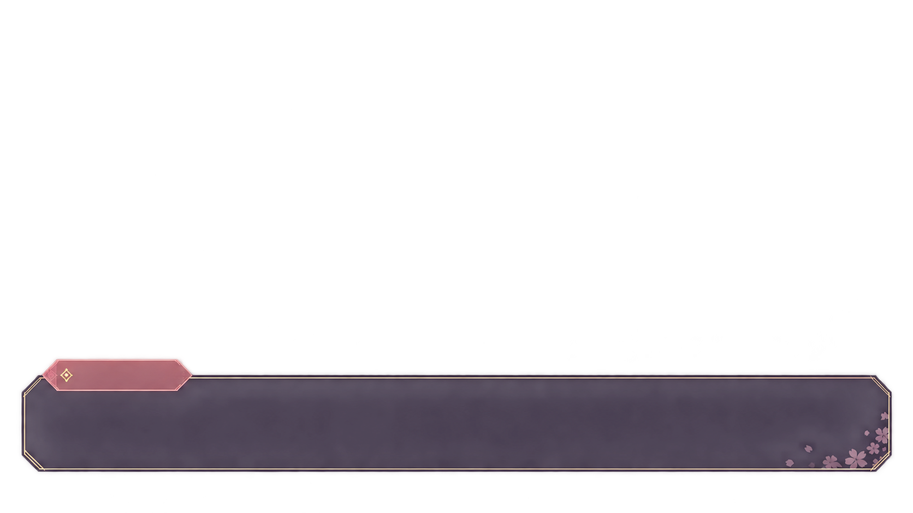

心动放映室
透明互动 ADV / 试玩
主题
夜樱心约
晴空来信
糖心物语
墨染花札
星轨终端
插画仅供预览
透明输出
CHAPTER
01
赴约
50
你们的关系：有一点在意
此刻，你会怎么回答？
把这一刻，交给你决定
YOUR CHOICE
点击选择 · 或按键盘 1 / 2 / 3
再赴一次约

小晚
对话记录
自动
音效关
重开
暂停
显示全文
故事的回声
故事暂歇
等你回来，故事再继续。
继续故事
SPACE
继续
1
2
3
选择
P
暂停
本地试玩 · 尚未连接直播平台